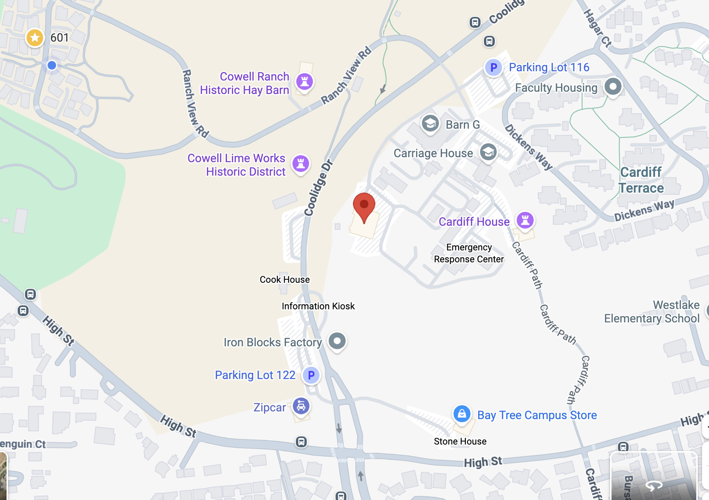

Local Information
Venue
Rooms 202 and 210
Humanities 1 Building
University of California, Santa Cruz
1156 High Street, Santa Cruz, CA 95064

Lodging
We have secured rooms with lowered rates in two local hotels, for the period April 30 - May 4 (four nights). You are free to book only a portion of those dates. The number of available rooms at a discount is limited, so booking earlier is recommended. Specify “FASL” if asked when booking to receive the reduced rate.
The Fairfield Inn is holding 10 rooms with one queen-size bed at $189 per night (plus taxes and fees, totalling roughly $219/night, or $876 for four nights). Important: Use this link to book at that rate. The last day to book at the discounted rate is April 6, 2026.
The Mission Inn is holding 15 rooms, some with one queen-size bed, others with one king- or two queen-size beds. The price depends on the kind of room and which nights are booked. The prices for all four nights range from $778 to $867. Important: to book here you must phone +1-831-425-5455 and mention “FASL”. You will need to provide your name, phone number, email address and credit card information. The last day to book at the discounted rate is April 6, 2026.
There are other hotels on the Westside of Santa Cruz, closer to the ocean: e.g., Dream Inn, Sea and Sand Inn, West Cliff Inn, Seaway Inn, La Bahia Hotel and Spa. We recommend booking soon.
Transportation to/from airports
The nearest airport (about a 45-minute drive) is San Jose Mireta International Airport (SJC). San Francisco International Airport (SFO) (about a 90-minute drive) may be better if you want a direct flight. Public transportation from these airports to Santa Cruz is not convenient. Though it is not cheap, we recommend a taxi or a ridesharing service (such as Lyft or Uber). This may cost $60-100 from San Jose Airport and $100-150 from San Francisco Airport. Alternatively, you may want to rent a car.
If you would prefer to spend less money, you can get from San Jose Airport to Santa Cruz by means of the Highway 17 Express bus. This still requires first getting from the airport to the Amtrak Diridon Station, and then getting from the Santa Cruz Metro Station to the hotel, by bus or taxi. Cheaper travel from San Francisco Airport to Santa Cruz also involves getting to the Highway 17 Express bus at Amtrak Diridon Station. Do this by taking a Bay Area Rapid Transit (BART) train from the airport to the Millbrae station and then Caltrain from there. Google Maps should be helpful for either of these journeys, and again, we do not recommend them, especially if you arrive late in the day.
Transportation within Santa Cruz
Though there are busses to campus, we will arrange rides to and from the conference venue from the Mission Inn and Fairfield Inn hotels.
There are easy walks from either hotel to restaurants and coffee shops. If you want to explore downtown Santa Cruz, you can get there by bus or taxi/rideshare, or by walking for 40-45 minutes.
If you are driving to campus yourself, here is information on parking.
We recommend you park in lot 109, please see below. Notice the FASL venue also indicated.

On Friday it's best to stop at the campus parking office (see below) for a permit; that's the easiest way to get a permit. However, on Saturday and Sunday you need an app called Parkmobile, which is easy to download and use. This will allow you to park in any space in Lot 109. (Please note you cannot use Parkmobile on Friday unless you are lucky enough to find an open spot marked for Parkmobile, and we wouldn't recommend trying that.)
